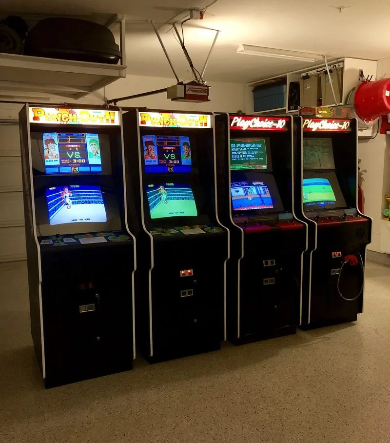
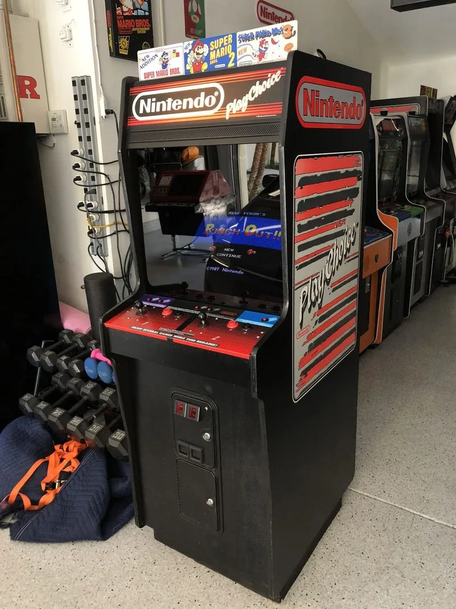
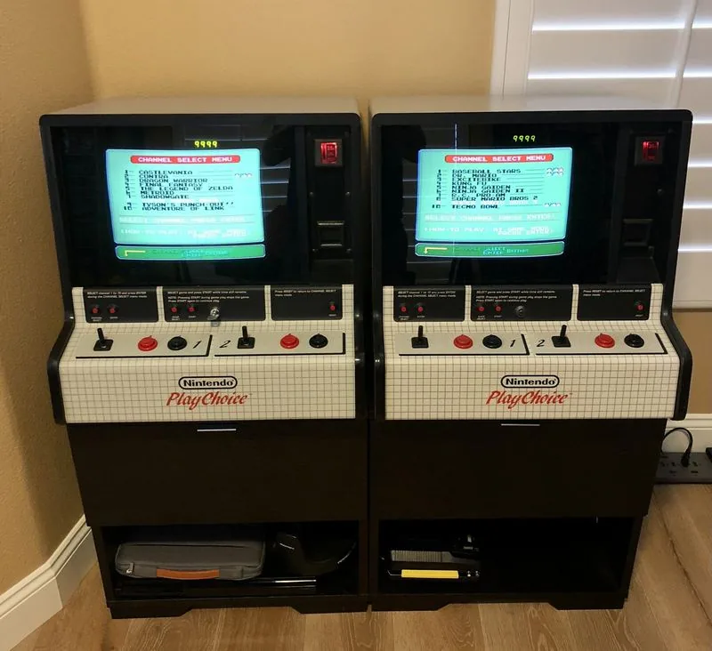

The Arcade Machine That Sold You the NES
In 1986 Nintendo put a machine in arcades that did not really want your quarters. It wanted you to go home and ask for a Nintendo. The PlayChoice-10 held ten NES games in one cabinet, sold them to you by the minute, and showed you how to play each one before you had spent a cent.

Ten games, one clock
Every arcade game before it sold lives. The PlayChoice sold time. A coin started a countdown, and while it ran the whole menu was yours: play Super Mario Bros. until you fell in a pit, switch to Excitebike, switch again. Dying cost nothing but seconds. When the clock ran out the game stopped, whatever you were doing.
For a kid, that was a sampler. For Nintendo, it was the point. Every one of those games was also on a shelf at the toy store.
The screen that taught you
The first PlayChoice cabinets had two monitors. The game ran on the lower one. The upper one held the menu, the time you had left, and instructions and tips for whatever you had picked. It behaves less like an arcade cabinet than like a demonstration stand, and it is often described as exactly that: a demonstration unit for NES games.
It behaves less like an arcade cabinet than like a demonstration stand.
Almost an NES
Under the menu, the machine is close to the console it was advertising. The games are NES games, usually unchanged, which is why the library reads like a row of NES boxes. But a PlayChoice board will not run in an NES, and an NES cartridge will not run in a PlayChoice. Each game is a bare circuit board that plugs into one of ten slots, carrying the game plus a small extra chip of hint text for the top screen. A second processor runs the clock and the menu. And the picture leaves the machine as RGB, with a palette slightly different from the home console’s, so the same game looks a little different in the cabinet.
All 52 boards, one by one, are on the cart wall, along with what the two-letter codes and part numbers on them mean.
How it spread
Nintendo sold it in more than one shape. The two-monitor upright came first. From 1988 there was a single-monitor cabinet, where a button swapped the game for the instructions, and there was a counter-top. There were also kits that turned an operator’s tired Donkey Kong, Donkey Kong Jr., Popeye or VS. cabinet into a PlayChoice. One of those kits is installed in the Red Tent.


On top of a cabinet sat a row of small metal stands, one for each game inside. Those are the toppers.

The end of the line
The library ran to 52 titles and was still getting new ones in 1992. That summer, Nintendo of America stopped making coin-operated equipment altogether. By then the PlayChoice had done its job.
Quick answers
What is a PlayChoice-10?
A Nintendo arcade system from 1986 that holds up to ten NES-based games in one cabinet and sells play by time instead of by lives.
Can a PlayChoice-10 game board run in an NES?
No. The games are the same, but the boards and the hardware around them are not interchangeable.
How many PlayChoice-10 games are there?
52. All of them are on the cart wall.
Why does a PlayChoice-10 have two screens?
The lower screen runs the game. The upper one shows the menu, the time remaining and instructions for the game selected.
The cabinets pictured have since moved on to other collections; the Red Tent’s kit is the PlayChoice here today. Sources & further reading: Super Mario Wiki — Nintendo PlayChoice-10 · Museum of the Game — PlayChoice 10 · System16 — PlayChoice 10 hardware
← More stories The cart wall → The topper wall → All 52, ranked →